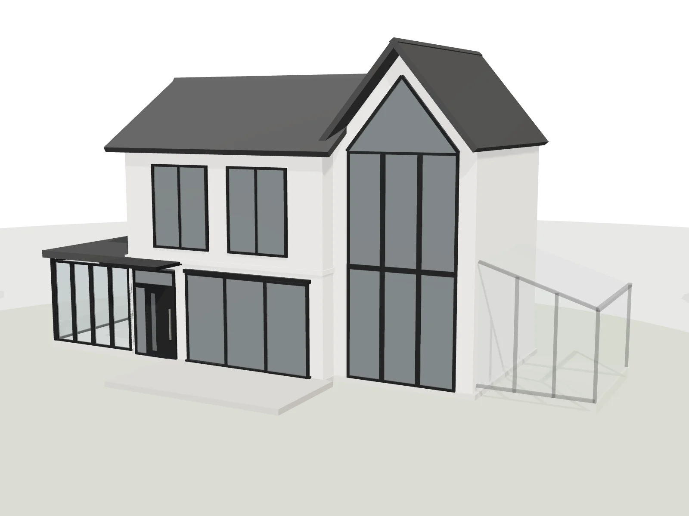

Интерактивный подбор
Персональная карта остекления
Выберите части дома, которые хотите изменить. Карта покажет сценарии для террасы, панорамных окон, второго света, входной группы или зимнего сада — а затем соберёт их в один предварительный проект.
Выберите зону → посмотрите варианты → сохраните проект.

Зоны дома
Дом на схеме — условный макет, а не ваш проект. Размеры и решения подтверждает инженер.
Персональная карта остекления
Ваш проект остекления
Вы выбрали зоны, которые станут основой для архитектурно-инженерной проработки. Добавьте план или фото — мы уточним конструкцию, стеклопакеты, узлы и ориентир бюджета.
Это предварительная концепция, составленная по вашим ответам. Возможность изготовления, точные размеры, стеклопакеты, пороги, нагрузки, монтажные узлы и стоимость подтверждаются после изучения проекта и инженерного замера.
Инженерная проработка
Передайте проект инженеру
Выбранные зоны и ответы уже приложены. Добавьте контакты и материалы, если они есть.
Карта отправлена
Мы получили ваш сценарий остекления. Инженер изучит выбранные зоны и материалы, после чего свяжется с вами для уточнения объекта.
Под ключ
Что входит в проект остекления
- 01Архитектурная логика фасада.
- 02Подбор порталов, панорамных окон и фасадных систем.
- 03Проверка стеклопакетов, теплотехники, безопасности и солнцезащиты.
- 04Монтажные узлы, пороги, примыкания и водоотведение.
- 05Инженерный замер, производство и монтаж.
Зоны
Какие зоны можно собрать
Вопросы и ответы
О карте остекления
Можно ли получить точную цену через карту?
Нет. Карта собирает задачу: какие части дома остеклить и какого эффекта вы ждёте. Цена зависит от размеров проёмов, стеклопакетов, порогов и монтажных узлов — её считает инженер после изучения плана или фото и замера. Ориентир бюджета он назовёт после первой проработки.
Что делать, если нет плана дома?
Достаточно фото фасадов и проёмов с примерными размерами. Если дом строится, подойдут эскиз архитектора или фото стройки. Остальное уточним на бесплатном замере.
Можно ли выбрать несколько зон одновременно?
Да. Добавьте в проект сколько угодно зон — например, выход в сад, панорамные окна второго этажа и террасу. Инженер посмотрит на них как на одну систему: профили, цвет и стекло согласуются по всему фасаду.
Чем карта отличается от инженерного проекта?
Карта — предварительная концепция по вашим ответам: зоны и подходящие типы решений. Инженерный проект — это размеры, разбивка на секции, стеклопакеты, нагрузки, пороги, монтажные узлы и смета. Его готовят после изучения материалов и замера.
Можно ли использовать карту, если дом уже построен?
Да. Отметьте стадию «Готовый дом» — инженер будет исходить из существующих проёмов и проверит, что можно расширить или заменить без переделки несущих конструкций.